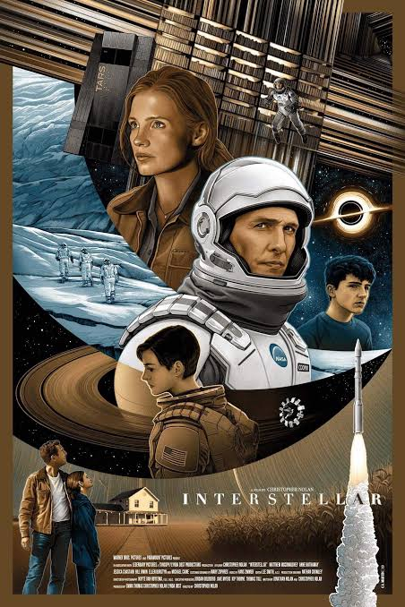
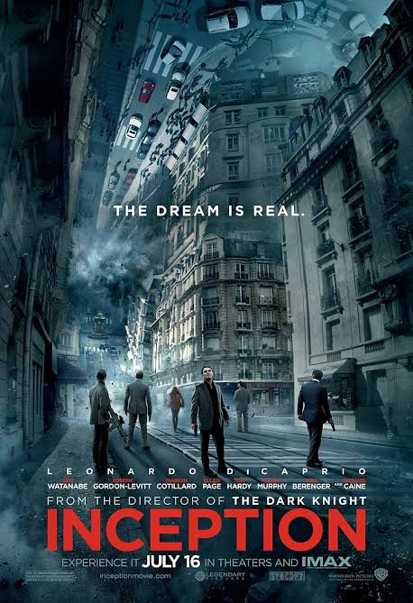
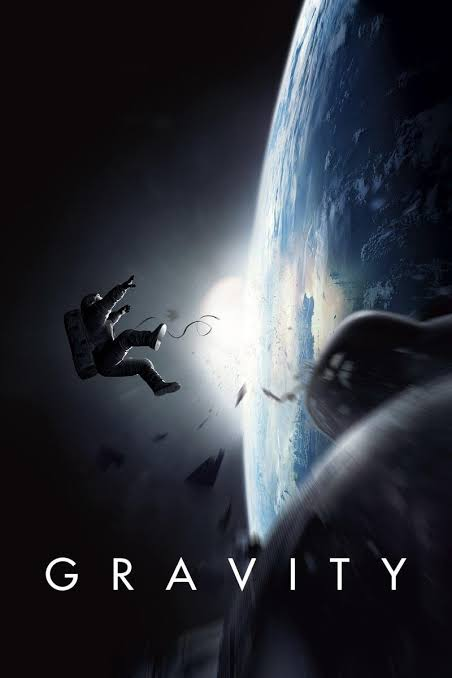
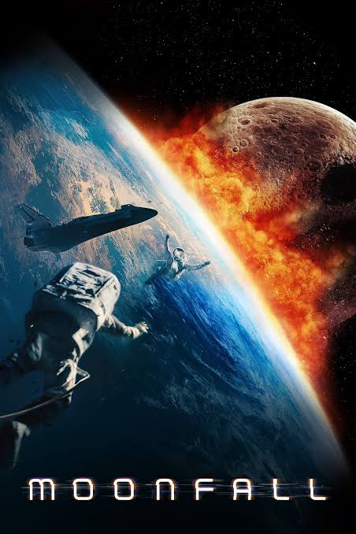
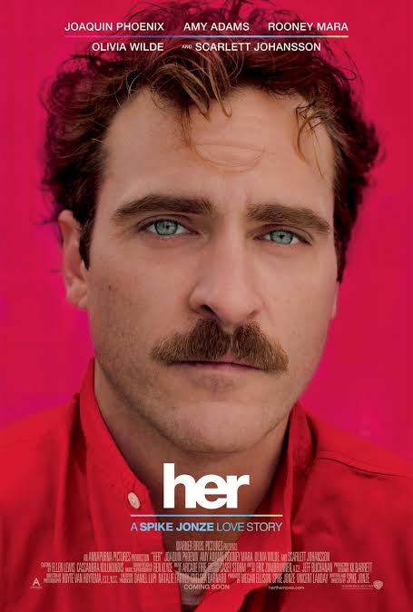
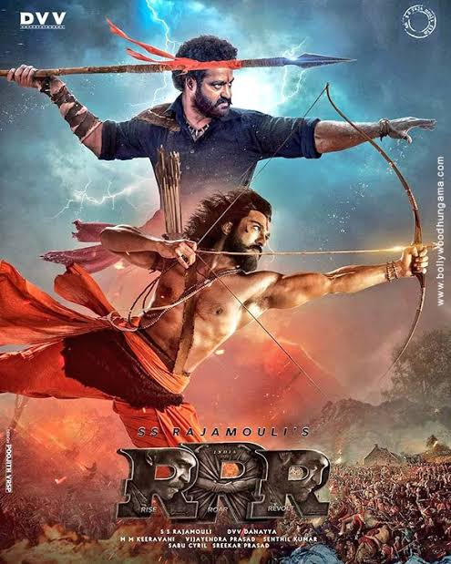
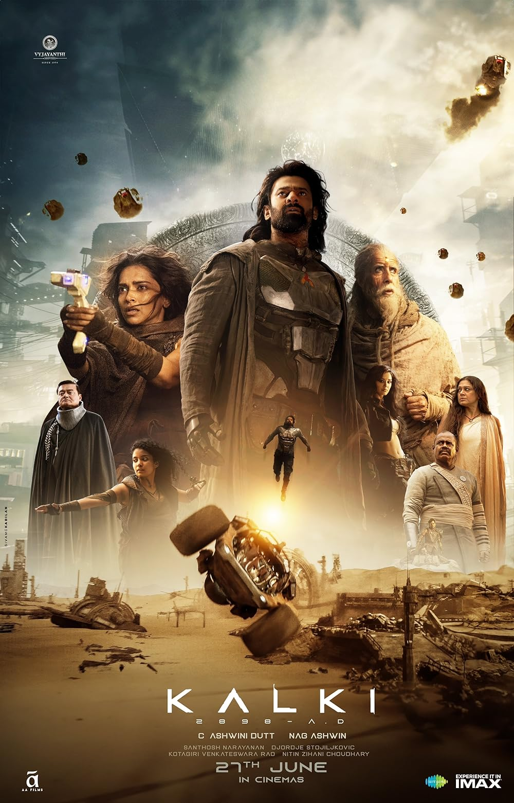

Interstellar
In Earth's future, a global crop blight and second Dust Bowl are slowly rendering the planet uninhabitable. Professor Brand (Michael Caine), a brilliant NASA physicist, is working on plans to save mankind by transporting Earth's population to a new home via a wormhole. But first, Brand must send former NASA pilot Cooper (Matthew McConaughey) and a team of researchers through the wormhole and across the galaxy to find out which of three planets could be mankind's new home.
The Martian

When astronauts blast off from the planet Mars, they leave behind Mark Watney (Matt Damon), presumed dead after a fierce storm. With only a meager amount of supplies, the stranded visitor must utilize his wits and spirit to find a way to survive on the hostile planet. Meanwhile, back on Earth, members of NASA and a team of international scientists work tirelessly to bring him home, while his crew mates hatch their own plan for a daring rescue mission.
Inception
Dom Cobb (Leonardo DiCaprio) is a thief with the rare ability to enter people's dreams and steal their secrets from their subconscious. His skill has made him a hot commodity in the world of corporate espionage but has also cost him everything he loves. Cobb gets a chance at redemption when he is offered a seemingly impossible task: Plant an idea in someone's mind. If he succeeds, it will be the perfect crime, but a dangerous enemy anticipates Cobb's every move.
Gravity
Dr. Ryan Stone (Sandra Bullock) is a medical engineer on her first shuttle mission. Her commander is veteran astronaut Matt Kowalsky (George Clooney), helming his last flight before retirement. Then, during a routine space walk by the pair, disaster strikes: The shuttle is destroyed, leaving Ryan and Matt stranded in deep space with no link to Earth and no hope of rescue. As fear turns to panic, they realize that the only way home may be to venture further into space.
Moonfall
The world stands on the brink of annihilation when a mysterious force knocks the moon from its orbit and sends it hurtling toward a collision course with Earth. With only weeks before impact, NASA executive Jocinda "Jo" Fowler teams up with a man from her past and a conspiracy theorist for an impossible mission into space to save humanity.
The Dark Knight

With the help of allies Lt. Jim Gordon (Gary Oldman) and DA Harvey Dent (Aaron Eckhart), Batman (Christian Bale) has been able to keep a tight lid on crime in Gotham City. But when a vile young criminal calling himself the Joker (Heath Ledger) suddenly throws the town into chaos, the caped Crusader begins to tread a fine line between heroism and vigilantism.
Iron Man

A billionaire industrialist and genius inventor, Tony Stark (Robert Downey Jr.), is conducting weapons tests overseas, but terrorists kidnap him to force him to build a devastating weapon. Instead, he builds an armored suit and upends his captors. Returning to America, Stark refines the suit and uses it to combat crime and terrorism.
Ex Machina

Caleb Smith (Domhnall Gleeson) a programmer at a huge Internet company, wins a contest that enables him to spend a week at the private estate of Nathan Bateman (Oscar Isaac), his firm's brilliant CEO. When he arrives, Caleb learns that he has been chosen to be the human component in a Turing test to determine the capabilities and consciousness of Ava (Alicia Vikander), a beautiful robot. However, it soon becomes evident that Ava is far more self-aware and deceptive than either man imagined.
Her
A sensitive and soulful man earns a living by writing personal letters for other people. Left heartbroken after his marriage ends, Theodore (Joaquin Phoenix) becomes fascinated with a new operating system which reportedly develops into an intuitive and unique entity in its own right. He starts the program and meets "Samantha" (Scarlett Johansson), whose bright voice reveals a sensitive, playful personality. Though "friends" initially, the relationship soon deepens into love.
Life of Pi

After deciding to sell their zoo in India and move to Canada, Santosh and Gita Patel board a freighter with their sons and a few remaining animals. Tragedy strikes when a terrible storm sinks the ship, leaving the Patels' teenage son, Pi (Suraj Sharma), as the only human survivor. However, Pi is not alone; a fearsome Bengal tiger has also found refuge aboard the lifeboat. As days turn into weeks and weeks drag into months, Pi and the tiger must learn to trust each other if both are to survive.
WALL-E

WALL-E, short for Waste Allocation Load Lifter Earth-class, is the last robot left on Earth. He spends his days tidying up the planet, one piece of garbage at a time. But during 700 years, WALL-E has developed a personality, and he's more than a little lonely. Then he spots EVE (Elissa Knight), a sleek and shapely probe sent back to Earth on a scanning mission. Smitten WALL-E embarks on his greatest adventure yet when he follows EVE across the galaxy.
Furious 7

After defeating international terrorist Owen Shaw, Dominic Toretto (Vin Diesel), Brian O'Conner (Paul Walker) and the rest of the crew have separated to return to more normal lives. However, Deckard Shaw (Jason Statham), Owen's older brother, is thirsty for revenge. A slick government agent offers to help Dom and company take care of Shaw in exchange for their help in rescuing a kidnapped computer hacker who has developed a powerful surveillance program.
RRR
A fearless revolutionary and an officer in the British force, who once shared a deep bond, decide to join forces and chart out an inspirational path of freedom against the despotic rulers.
Baahubali 2: The Conclusion

When Bhallaladeva conspires against his brother to become the king of Mahishmati, he has him killed by Katappa and imprisons his wife. Years later, his brother's son returns to avenge his father's death.
Kalki 2898 AD
A modern avatar of the Hindu god Vishnu, is said to have descended on Earth to protect the world from evil forces.